전자계산기기능사 (2003-10-05 기출문제)
1과목: 전기전자공학
1. 정전압회로의 설명 중 잘못된 것은?
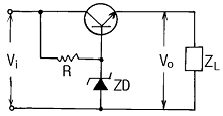
- TR은 제어석으로 가변저항기 역할을 한다.
- ZD는 제너다이오드이다.
- 병렬형 정전압회로이다.
- 증폭단을 증가함으로서 출력저항 및 전압안정계수를 적게 할 수 있다.
(정답률: 47%)

2. 회로에서 이미터-베이스간의 전압 V BE 는?
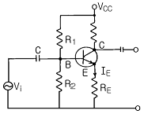
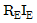
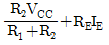
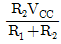
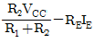
(정답률: 29%)
3. 수정발진기는 어떤 것을 이용한 것인가?
- 압전기효과
- 홀효과
- 인입현상
- 자외현상
(정답률: 67%)
4. 멀티바이브레이터에 대한 설명으로 틀린 것은?
- 부궤환의 일종이다.
- 고차의 고조파를 포함하고 있다.
- 회로의 시정수로 주기가 결정된다.
- 전원전압이 변동해도 발진주파수는 큰 변화가 없다.
(정답률: 29%)
5. 톱니파 발생회로에서 톱니파가 양호하게 될 수 있는 시정수의 조건으로 옳은 것은?
- 시정수가 클수록 양호하게 된다.
- 시정수가 작을수록 양호하게 된다.
- 시정수가 1 일 경우에 가장 양호하게 된다.
- 시정수가 0 일 경우에 가장 양호하게 된다.
(정답률: 33%)
6. 정현파 발진을 할 수 없는 것은?
- 수정발진기
- LC반결합발진기
- CR발진기
- 멀티바이브레이터
(정답률: 54%)
7. 정현파 교류의 실효값이 220V일 때, 이 교류의 최대값은약 몇 V인가?
- 110
- 141
- 283
- 311
(정답률: 32%)
8. 트랜지스터를 사용할 때의 주의사항으로 볼 수 없는 것은?
- PNP형인지 NPN형인지를 살펴야 한다.
- 옆으로 눕혀서는 사용하지 않아야 한다.
- 온도가 높아지지 않도록 주의하여야 한다.
- 컬렉터, 이미터의 전극을 맞추어서 사용하여야 한다.
(정답률: 59%)
9. 그림과 같은 회로에서 b-c간의 전압은 몇 V인가?
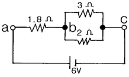
- 1.2
- 1.8
- 2.0
- 2.4
(정답률: 38%)
10. 그림과 같은 회로에 대한 설명으로 옳은 것은?
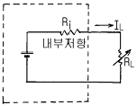
- 정전류원은 RL의 값에 따라 일정한 전류를 공급하는 전원이다.
- 정전류원이 되려면 RL＞＞Ri이다.
- 일반적으로 우리가 가지는 전압원은 정전압원이라기 보다는 정전류원이다.
- 이상적인 정전류원인 경우에는 내부저항 Ri=∞이다.
(정답률: 34%)
2과목: 전자계산기구조
11. 중앙처리장치 내의 하드웨어 요소와 그 기능을 짝지은 것 중 서로 옳지 않은 것은?
- 레지스터-기억기능
- ALU-연산기능
- 어큐뮬레이터-제어기능
- 내부버스-전달기능
(정답률: 67%)
12. 마이크로컴퓨터에서 MPU란?
- 기억장치
- 입력장치
- 출력장치
- 마이크로프로세서 장치
(정답률: 82%)
13. 보통 입력선을 변화시켜 디코더(Decoder)와 같은 기능을 얻을 수 있는 것은?
- 멀티플렉서
- 디멀티플렉서
- 시프트 레지스터
- 계수기
(정답률: 56%)
14. 문자 코드(Character code) 체계가 아닌 것은?
- ASCII code
- BCD code
- EBCDIC code
- BINARY code
(정답률: 65%)
15. 다음 그림과 같이 A, B 레지스터에 있는 2개의 자료에 대해 ALU에 의한 OR 연산이 이루어졌을 때 그 결과가 저장되는 C 레지스터의 내용은?
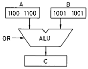
- 11111110
- 10000001
- 10110110
- 11011101
(정답률: 75%)
16. 다음 연산 중 binary 연산에 해당하는 것은?
- 시프트(Shift)
- 회전(Rotate)
- 보수화(Complement)
- AND
(정답률: 49%)
17. 프로그램 언어 중에서 하드웨어(HARDWARE)의 이용을 가장 효율적으로 하고, 프로그램 수행 시간이 가장 짧은 언어는?
- MACHINE 어
- ASSEMBLY 어
- FORTRAN
- C 언어
(정답률: 47%)
18. 현재 수행 중에 있는 명령의 다음 명령(next instruction)의 주소를 지시하는 레지스터는?
- data register
- program counter
- memory address
- instruction register
(정답률: 72%)
19. CPU를 경유하지 않고 메모리에 직접 액세스 하는 것은?
- DAM
- DMA
- BUS
- LED
(정답률: 72%)
20. 프로토콜의 규범을 정할 때 들지 않는 것은?
- 제어문자의 사용 방법
- 메시지의 형태
- 착오 검출 방법
- 데이터 전송 속도
(정답률: 34%)
21. 컴퓨터가 어떤 프로그램을 실행 중에 긴급 사태 등이 발생하면 실행 중인 프로그램을 일시 중단하여 긴급 사태에 대처하고, 긴급 처리가 끝나면 중단했던 프로그램을 다시 재개하는 제어방식은?
- Interrupt Control
- Sequential Control
- Advanced Control
- Synchronous Control
(정답률: 75%)
22. 6비트로서 서로 다른 문자로 표현할 수 있는 BCD 코드는 몇 개인가?
- 16
- 32
- 64
- 128
(정답률: 75%)
23. 제한된 영역 내에 데이터를 어느 한쪽에서는 입력만 시키고, 그 반대쪽에서는 출력만 시키므로 가장 먼저 입력된 것이 가장 먼저 출력되는 선입선출 형식의 구조는?
- 스택(stack)
- 큐(queue)
- 버스(bus)
- 캐시(cache)
(정답률: 57%)
24. 다음은 어떤 명령어의 형식인가?
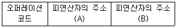
- 단일 주소 명령어
- 2주소 명령어
- 3주소 명령어
- 4주소 명령어
(정답률: 77%)
25. 프로세서가 인터럽트의 요청을 받으면 소프트웨어에 의하여 접속된 장치 중에서 어떤 장치가 요청하였는지를 순차적으로 조사하는 것을 무엇이라 하는가?
- 플래그(flag)
- 폴링(polling)
- 오퍼랜드(operand)
- 분기명령(branch instruction)
(정답률: 46%)
26. 2진수 10011011의 1의 보수로 옳은 것은?
- 10011100
- 01100100
- 01100101
- 10011010
(정답률: 80%)
27. 패리티 비트 에러 체크 시 사용되는 비트(bit) 수는?
- 1개
- 4개
- 7개
- 8개
(정답률: 43%)
28. 불 대수의 기본 법칙에서 교환 정리를 나타낸 것은?
- A＋A=A
- A＋B=B＋A
- A＋(B＋C)=(A＋B)＋C
- A·(B＋C)=A·B＋A·C
(정답률: 42%)
29. 제조 회사에서 미리 만들어진 것으로 사용자는 절대로 지우거나 다시 입력할 수 없는 메모리는?
- RAM
- EAROM
- Mask ROM
- Flash Memory
(정답률: 72%)
30. 7비트로 한 문자를 나타내며 128문자까지 나타낼 수 있고 , 데이터 통신과 소형 컴퓨터에 많이 사용하는 코드는?
- ASCII 코드
- GRAY 코드
- EBCDIC 코드
- 표준 BCD 코드
(정답률: 88%)
3과목: 프로그래밍일반
31. 인터프리터 방식의 언어는?
- C
- COBOL
- BASIC
- FORTRAN
(정답률: 62%)
32. 시스템 프로그래밍 언어로 사용하기에 가장 적합한 언어 는?
- C
- COBOL
- BASIC
- FORTRAN
(정답률: 90%)
33. 구조적 프로그래밍의 기본 논리구조에 해당하지 않는 것은?
- 그물구조
- 순차구조
- 선택구조
- 반복구조
(정답률: 75%)
34. 기계어로 번역된 목적 프로그램을 결합하여 실행 가능한 모듈로 만들어주는 프로그램은?
- 라이브러리 프로그램(library program)
- 연계 편집 프로그램(linkage editing program)
- 정렬/병합 프로그램(sort/merge program)
- 파일 변환 프로그램(file conversion program)
(정답률: 44%)
35. 언어번역 프로그램에 해당하지 않는 것은?
- 로더
- 어셈블러
- 컴파일러
- 인터프리터
(정답률: 75%)
36. 원시 프로그램을 목적 프로그램으로 번역하는 것은?
- 운영체제(operating system)
- 컴파일러(compiler)
- 로더(loader)
- 링커(linker)
(정답률: 72%)
37. 유한 오토마타(finite automata)에 의해 수락된 집합을 무엇이라 하는가?
- 문자열 집합
- 정규집합
- 알파벳 집합
- 문법집합
(정답률: 35%)
38. 시스템 프로그램이 아닌 것은?
- 로더(loader)
- 컴파일러(compiler)
- 운영체제(operating system)
- 워드프로세서(word processor)
(정답률: 62%)
39. 구조적 프로그래밍 기법에서 가급적 배제되는 문은?
- IF 문
- STOP 문
- CASE 문
- GOTO 문
(정답률: 70%)
40. 운영체제를 수행 기능에 따라 크게 2 가지로 분류한 것으로 옳은 것은?
- 응용프로그램과 처리프로그램
- 제어프로그램과 처리프로그램
- 처리프로그램과 번역프로그램
- 번역프로그램과 응용프로그램
(정답률: 60%)
4과목: 디지털공학
41. 배타적-NOR의 출력이 0인 때는 언제인가?
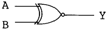
- A, B 모두 0일 때
- A, B 모두 1일 때
- A와 B가 다를 때
- A와 B가 같을 때
(정답률: 52%)
42. 반가산기의 구성에서 빈칸에 적합한 것은?
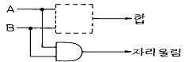
- NOT
- NAND
- EX-OR
- OR
(정답률: 69%)
43. 데이터의 일시적인 보존이나 디지털 신호의 지연작용 등에 편리한 플립플롭은?
- RS
- JK
- T
- D
(정답률: 73%)
44. 그림은 무슨 회로의 논리기호인가?
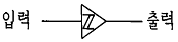
- 버퍼
- 계수기
- 비교기
- 시미트 트리거
(정답률: 45%)
45. 조합 논리 회로에 해당하는 것은?
- 래치
- 계수 회로
- 일치, 반일치 회로
- 쌍안정 멀티바이브레이터
(정답률: 27%)
46. 다음 그림은 인버터를 이용한 비안정 멀티바이브레이터 이다. R1=R2=R, C1=C2=C일 때 발진 주파수는?
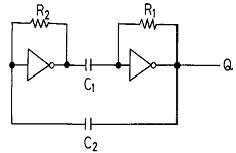
- f=0.7/RC[Hz]
- f=RC/0.7[Hz]
- f=1.4/RC[Hz]
- f=RC/1.4[Hz]
(정답률: 41%)
47. 일반적으로 디지털 시스템에서 음수의 표현 방법이 아닌 것은?
- 부호와 절대값
- 1의 보수
- 2의 보수
- 부호 비트 0
(정답률: 73%)
48. 입력이 J=K=1일 때 플립플롭은 불확정한 출력을 내지 않고, 클럭 펄스의 에지(edge) 구간에서 출력 상태가 바뀌도록 하는 것을 무엇이라 하는가?
- 셋(set)
- 리셋(reset)
- 트리거(trigger)
- 토글(toggle)
(정답률: 68%)
49.
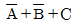
함수의 부정은?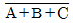
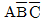
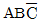
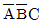
(정답률: 72%)
50. 2진수(01011)2의 2의 보수는?
- 11111
- 11010
- 10101
- 10100
(정답률: 85%)
51. JK 플립플롭의 특성 방정식은?
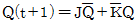
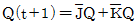
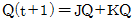
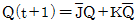
(정답률: 32%)
52. 두 개 이상의 입력 데이터 중에서 어느 하나를 선택하여 출력하는 것은?
- 멀티플렉서
- 디멀티플렉서
- 디코더
- 비교기
(정답률: 44%)
53. 레지스터(Register)와 계수기(Counter)를 구성하는 기본 소자는?
- 해독기
- 감산기
- 가산기
- 플립플롭
(정답률: 77%)
54. 비가중치 코드(Non-weighted code)가 아닌 것은?
- 그레이 코드
- 3-초과 코드
- BCD 코드
- 시프트 카운터 코드
(정답률: 31%)
55. 2진 형태의 수를 10진 형태의 수나 기호로 바꾸어 주는 것은?
- 인코더
- 디코더
- 멀티플렉서
- 디멀티플렉서
(정답률: 57%)
56. 다음 진리표를 보고 불 대수를 표현하면?
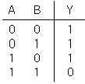
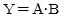
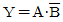
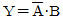
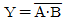
(정답률: 64%)
57. 순서논리회로가 아닌 것은?
- 리플 계수기
- 디멀티플렉서
- 레지스터
- 링 계수기
(정답률: 36%)
58. 에러(error) 검출뿐만 아니라 교정까지 가능한 코드는?
- Biquinary code
- Gray code
- ASCII code
- Hamming code
(정답률: 85%)
59. 다음의 논리회로와 동일한 기능을 하는 논리회로는?
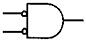
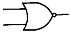
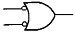
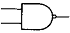
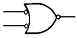
(정답률: 47%)
60. 다음 식 중에서 결과가 옳지 않은 것은?
- A ㆍ A' = A
- A + A = A
- A + 0 = A
- A ㆍ A = A
(정답률: 71%)